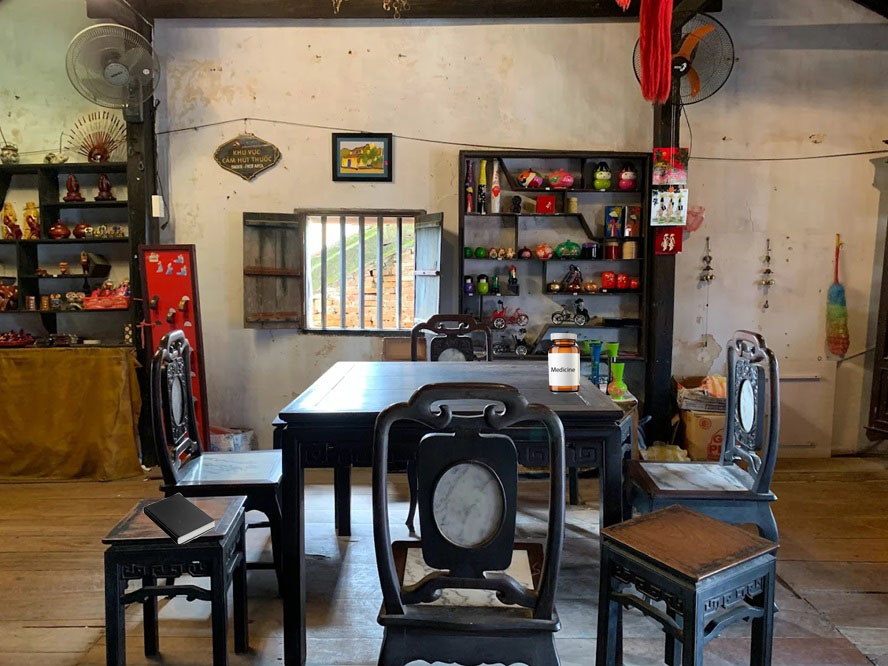

A poem from my grandson. It is a beautiful poem that reminds me of the importance of remembering and cherishing our loved ones.
Toys left by my grandson. Oh, how I remember how he used to play with them!
A colorful dust cleaner that I used to discipline my kids.
Explore the book, toys, and rainbow stick, then click Read the poem to unlock the medicine bottle.